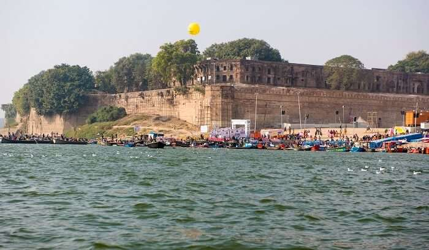
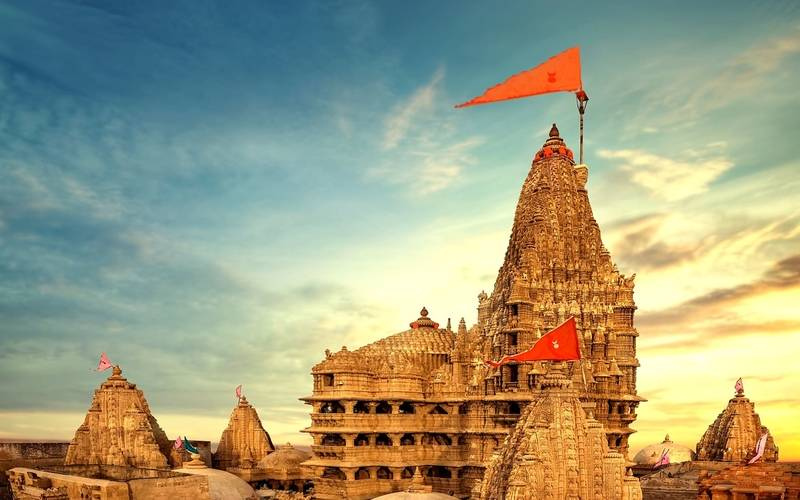
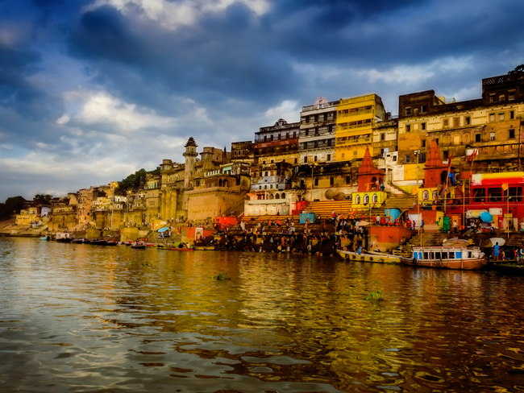

1
Allahabad
Historical City with Sacred Sites
A Hindu pilgrimage centre located at the confluence of three holy rivers and the host of the grand Kumbh Mela, Prayagraj (formerly Allahabad) is believed to be the site where Lord Brahma, the creator of the universe, performed the first ever yajna.

2
Amritsar
The Spiritual Capital of Punjab
Home to the legendary Sikh shrine Golden Temple, Amritsar is fondly called Ambarsar and will steal your heart with its colourful bazaars, lip-smacking street food, shopping hubs and historical monuments.

3
Dwaraka
One of the Char Dhams
An ancient and prosperous city believed to have been the capital of Lord Krishna's kingdom, Dwarka is an important pilgrimage centre for Hindus from all over the world. It is located on the western coast of Gujarat, on the banks of River Gomti.

4
Varanasi
Uttar Pradesh’s Spiritual Capital
Situated on the banks of River Ganga in Uttar Pradesh, Varanasi is considered as one of the holiest cities, drawing tourists who seek spiritual awareness and liberation.

5
Tirupati
Spiritual City in Andhra Pradesh
Tirupati is home to the sacred Sri Venkateswara temple, sitting atop the beautiful Tirumala Hills, and thus considered as an epicenter of spiritual devotion.

6
Kedarnath
The Land of Lord Shiva